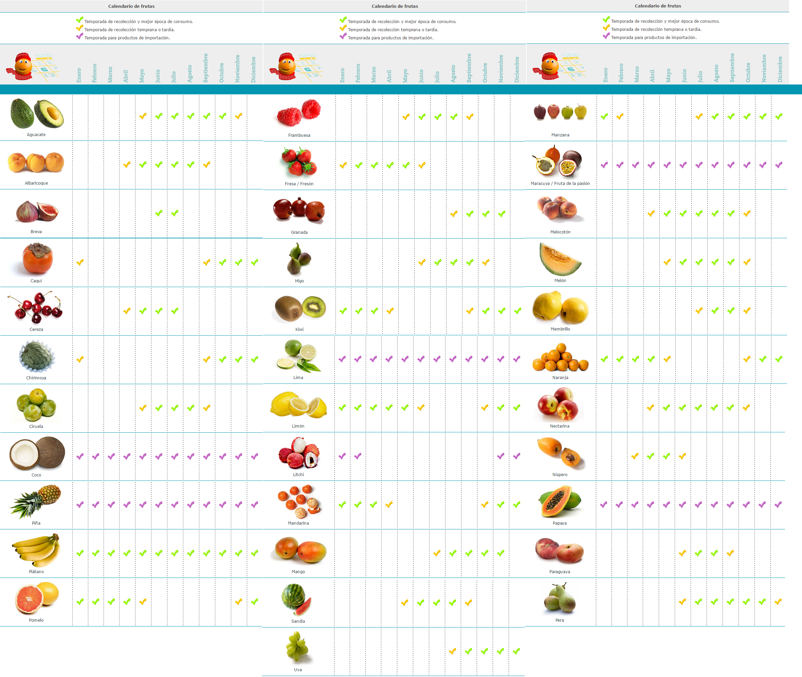
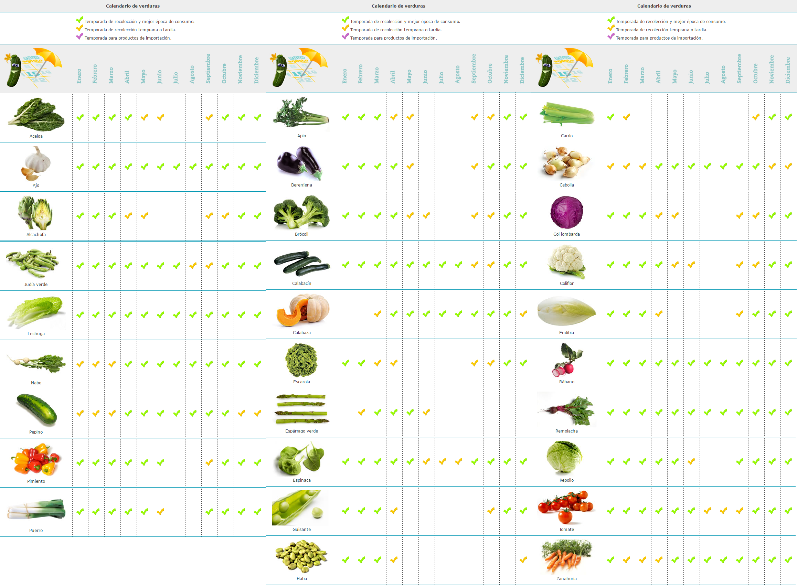

De Temporada
Consumir alimentos de temporada es una gozada, pues no sólo se disfruta del alimento en su mejor momento, sino que se respeta el calendario natural del producto.
Actualmente estamos acostumbrados a ver muchos productos prácticamente todo el año en los mercados, ya que si en nuestro país se ha acabado la época, se importan de otro dónde está en su apogeo. Por eso nos vamos a centrar en las frutas, verduras, carnes y pescados que podemos encontrar en España.
En general los alimentos de temporada suelen tener más sabor, así como mejor textura y olor si han completado su calendario natural. También son más baratos ( quitando justo el comienzo de temporada), ya que las tiendas tienen mayor disponibilidad. Si aumenta la oferta, disminuyen los precios. Si además son de proximidad, se eliminan los gastos correspondientes al transporte de largo recorrido, distribución y almacenaje.
Se adjuntan algunas tablas que me parecen bastante útiles para ver de un vistazo qué podemos encontrar en cada mes del año.

